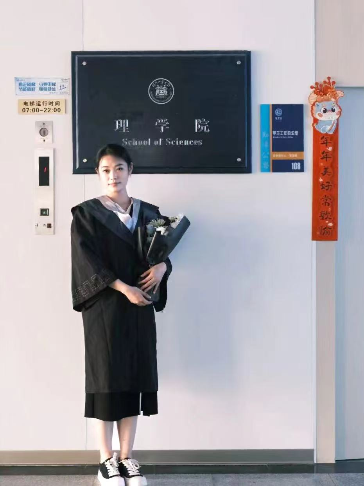
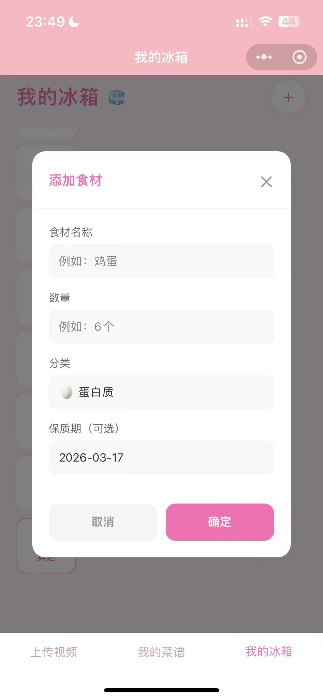
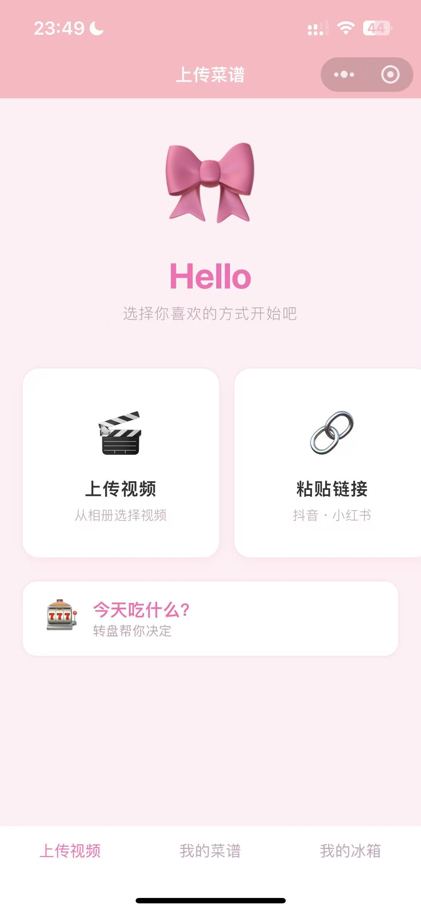
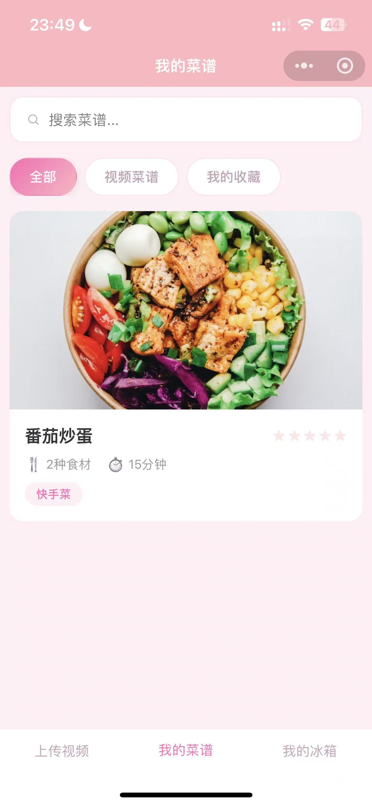
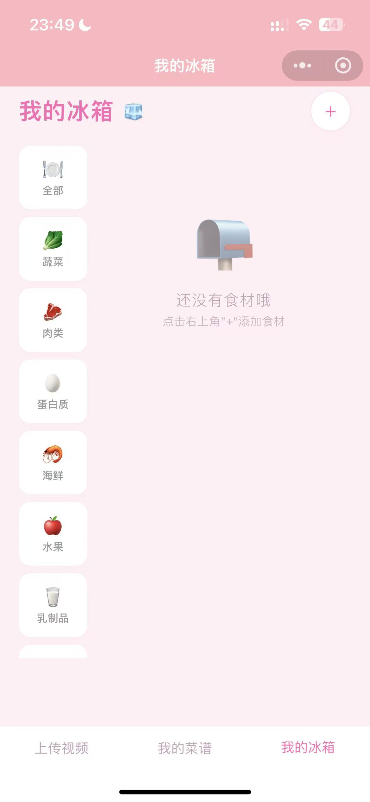
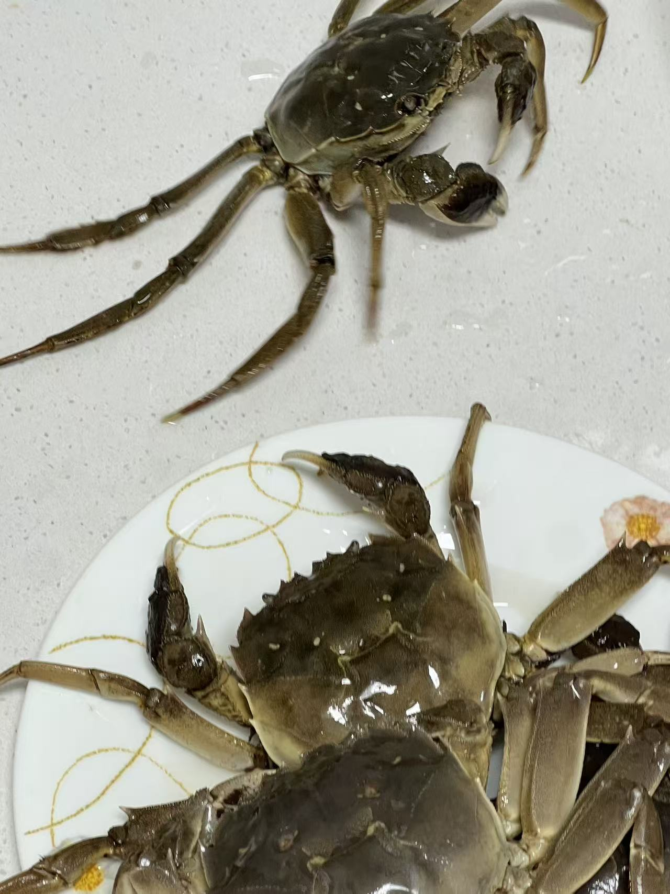
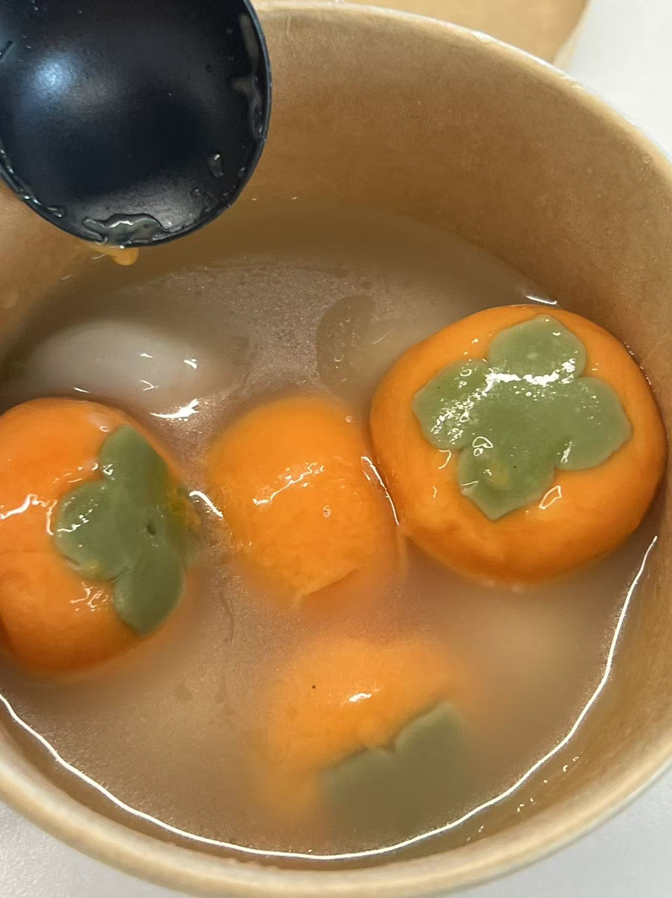
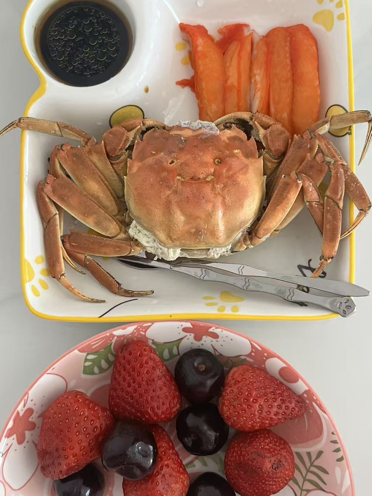

Hi




北京邮电大学
计算数学（硕士）
河北工业大学
数学与应用数学（本科）
担任四年班级班长
移动鼠标与照片球互动 ✨
背景：基于用户文案偏好研究，探查到优质文案是用户点击 push 的重要驱动力，以及当前 push 机器拼接文案存在表意不明、表达生硬、缺乏真实性的痛点问题。为了守住文案质量底线，提升 push 点击率，拉动 DAU 增长
需求内容：搭建多维度质量评估体系，构建训练数据集，通过提示词调优、RAG 检索、SFT、DPO 等模型微调手段，实现文案准确率达到 95%，同步搭建文案质量判别模型以提高审核效率，判别模型准确率达到 90%，准召率 70%
AB 实验：大模型文案 ctr+0.1pp，有效播放率+0.08pp，DAU+30w，是推动 AI 大模型应用落地首个 Push 业务场景
背景：通过对 push-视频池冷启动成功率下降 6.8pp，定位原因为无分发视频占比高，且 63.3%的有分发视频未达到初始流量阈值。
目的：为了优化推荐系统的多样性与时效性，对新入池的视频进行流量扶持的牵引优化，挖掘出更多优质新内容长期贡献 DAU。
需求内容：定义冷启动指标体系，制定保量召回、Boost 排序摸高、垂类*十大人群差异化扶持、爬坡赛马机制、流量倾斜高点击人群、冷启动流量小时级别调控等精细化策略
AB 实验：冷启动成功率+8pp，Push 内容的时效性（4～14 天内的新视频占比+1.38pp），多样性（TOP5 垂类视频占比-0.32pp）
背景：针对 Push 贡献的 0-1minDAUyoy+16%，根据收入贡献与时长是否跃迁将 0-1min 用户群体划分为正常用户与异常用户（64%）
需求内容：开展 push 拉端进程的性能优化，并制定基于用户是否有有效消费行为进行 push 进端后承接追打、多样性打散策略
AB 实验：push 点击到视频曝光时间戳提升 2s，有效播放率+0.12pp，时长+10w 分钟
背景：为了解决丽人频道中推荐语模板化与男性用户需求聚焦且高转化的矛盾，利用 AI 赋能生产兼具个性化与感染力的推荐语
需求内容：从 0-1 搭建从数据圈选、prompt 工程到质量评测的工作流，构建质量评估体系，采用 DINN 模型进行个性化推荐
AB 实验：美发类目 UVCTR 提升 2.52pp，OPM（千次曝光订单转化数）提升 6.63，每日新增 1800+订单
背景：为了提升流量承接效率，针对用户进入商户详情页时默认展示"全部"货架 Tab，间接延长用户决策路径与成本的场景。
需求内容：主导设计了基于 Query 意图与商户经营类型（综合/单品类），动态采用"锚定 Tab"或生成"刚刚搜过"Tab 承接链路。
AB 实验：团购 UVCTR+0.09pp，下单用户的货架点击率-0.04pp，访购率+0.16pp。
背景：针对烹饪新手观看美食教程时节奏过快，操作不便，且纯文字菜谱理解成本高的痛点问题，使用 claude code 设计并开发 AI 美食视频解析小程序。
功能：用户上传链接或者视频，AI 自动提取食材与烹饪步骤，同时提供菜谱管理、食材管理、趣味推荐等功能。







开始系统学习烹饪，从基础的刀工到各种烹饪技巧。
发现做饭和写代码有很多相似之处，都需要耐心和细节把控。
已经能做出几道拿手菜了，朋友们都说很好吃！
如果你有任何问题或合作意向，欢迎随时联系我！